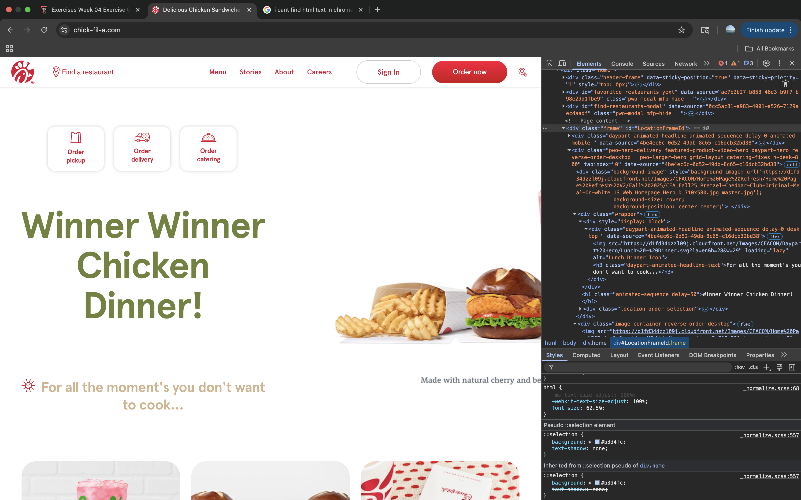

My Dev Tools Vandalism
I used browser developer tools to temporarily "vandalize" Chick-fil-A's website. Below is a screenshot showing my changes. These edits only appeared on my computer and did not affect the actual website.

What I "Vandalized"
Describe the changes you made to the website using the browser's developer tools. Some potential questions to consider:
- What text did you edit? The company is currently promoting their pretzel bread chicken sandwhich. I edited the name of the sandwich, and the text descriptor over top.
- What CSS properties did you modify? I modified the font sizes of the text and the colors. I also changed the justify-direction of the border-box.
- What made your edits interesting or amusing? I changed out the name of the sandwich, for a known saying, "winner winner chicken dinner." I often use that phrase with friends and family, it makes me laugh. The texts I used made me happy overall.
- Did you understand why some changes worked and some didn't? No, I tried to change the background color, but the website has so many colors, in diffrent locations, I wasn't sure what color belonged to where.
- Why did you choose the changes you did? The webiste homepage had many images and text as you scrolled down the page. The area I chose to edit is front and center.
- Were you able to understand how the HTML and CSS worked together to make the changes you made? Yes, for the most part, I understood how these changes work together.
- Do you think you have a better sense of how dev tools can be used while crafting your own webpages? Yes, dev tools will be most helpful once I advance my web developer skills.